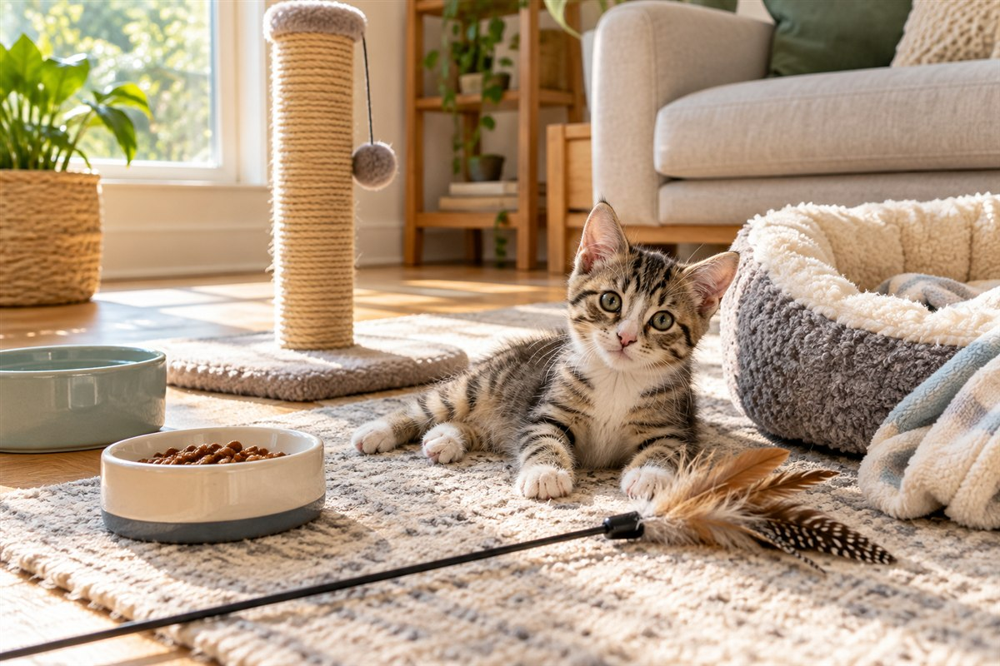

A Realistic Daily Schedule for a New Kitten

A new kitten does not need a color-coded calendar. They need the same few good things to happen in a reassuring order: familiar food, a clean litter tray, short bursts of hunting-style play, quiet company and a surprising amount of sleep. The most useful schedule is not rigid. It is a repeatable rhythm that helps both of you know what happens next.
Researched by the CanMyPet Editorial Team · Prepared October 30, 2026 · Based on current settling and kitten-care guidance from Cats Protection and the RSPCA.
What a kitten schedule should actually do
A schedule is useful because a new home contains hundreds of unknowns: different floor sounds, unfamiliar people, strange smells, new bowls and a litter tray in a place the kitten has never visited. A predictable sequence lowers the number of surprises without forcing the kitten to perform on command.
Cats Protection recommends keeping a new kitten's routine consistent, giving them plenty of time to sleep and introducing the rest of the home gradually. The RSPCA similarly advises keeping the same familiar food and routine at first, using small regular meals and keeping training or handling sessions short.
Predictable does not mean rigid
The order matters more than the exact minute. If the kitten sleeps through the planned 2:00 p.m. play block, let them sleep and continue after they wake.
Your kitten is the feedback
Notice when they naturally wake, play, eat, groom and retreat. Adjust the household rhythm around those patterns instead of constantly interrupting them.
Start with a sanctuary room
Before building a whole-house routine, create one kitten-proofed home base. Cats Protection recommends a quiet sanctuary room with a bed, separate food and water bowls, at least one litter tray placed away from those bowls, hiding places, a safe high spot, a scratching post, toys and space to play.
Take the carrier directly into that room and open the door. Let the kitten come out in their own time. Show them the key stations once they begin exploring, but do not repeatedly lift and place them at each object. The room should stay available even after their world expands.
A realistic weekday schedule
This example is designed for a normally weaned kitten living with an adult who works a typical daytime schedule. Move the times earlier or later as needed. Follow the daily food amount and meal guidance supplied by the kitten's current food, adoption organization or veterinarian; this schedule deliberately does not invent portions.
| Time block | What happens | Why it helps |
|---|---|---|
| 6:30–7:00 a.m. | Quiet greeting, litter check and fresh water. Offer the first planned meal. | The day begins with useful basics rather than instant excitement. |
| 7:00–7:15 a.m. | Short wand-toy or rolling-toy play, followed by a calm wind-down. | A brief chase-and-catch sequence gives morning energy somewhere appropriate to go. |
| 7:15–9:30 a.m. | Grooming, supervised exploration and then uninterrupted rest. | Kittens often switch from intense activity to sleep quickly. The rest block is part of the routine, not empty time. |
| Late morning | Litter check, planned meal and two or three minutes of gentle handling or carrier familiarity. | Small everyday experiences become normal without turning into a long training session. |
| Midday–afternoon | Mostly rest, with safe solo toys and a brief check-in when the kitten wakes. | A new kitten needs calm space as much as entertainment. Remove string-like or easily damaged toys when nobody is supervising. |
| Late afternoon | Planned meal, litter check and a short social play session. | The sequence reconnects you after the quiet part of the day. |
| Early evening | One supervised new experience: another room, a household sound at low intensity or a calm visitor. | One small novelty is easier to process than an evening full of introductions. |
| 8:00–9:00 p.m. | Longer interactive play, then the final planned meal and a quiet settle. | Ending with hunt-style play, food and calm helps create a recognizable bedtime pattern. |
| Overnight | Safe room, water, litter access and a warm sleeping place. Keep nighttime responses low-key. | The kitten has everything essential without learning that every midnight bounce starts a household party. |
The four anchors that make the schedule work
1. Planned meals, not an all-day guessing game
Young kittens commonly eat little and often. Keep the total daily amount tied to the food's instructions and the plan you received from the breeder, shelter, rescue or veterinarian, then divide it across the planned meals. Write down when meals happen so every person in the household knows whether the kitten has already been fed.
Place food and water apart. Keep both away from the litter tray. If a meal is used for a food puzzle, make the puzzle easy enough that a new kitten can succeed and confirm that all pieces are secure.
2. Short play that looks like hunting
Play supports coordination, confidence and normal hunting behavior. Cats Protection recommends frequent short sessions rather than fewer long ones. Move a wand toy away from the kitten like prey, allow successful catches and end before the kitten becomes frantic or loses interest.
Hands and feet are not toys. A tiny kitten grabbing fingers can look harmless, but the same habit is much less charming in an adult cat. Redirect to a toy and rotate the available options instead of leaving every toy out forever. The cat toy rotation method gives you a simple weekly system.
3. Litter checks built into transitions
Most kittens already have some litter-tray experience before adoption. Make success easy: use a familiar litter texture, place the tray in a quiet accessible spot and keep the route clear. Check the tray after waking, after meals and during your normal morning and evening routines, without hovering while the kitten uses it.
For a multi-cat home, spread resources through the home rather than clustering every tray and bowl into one corner. A kitten should not have to pass a resident cat to reach the bathroom.
4. Protected sleep
Kittens can go from zooming to asleep in minutes. Do not keep waking them because the household schedule says it is time to play. Provide more than one comfortable sleeping choice, keep children from disturbing the bed and let the kitten retreat without being followed.
A routine with no protected sleep window often produces exactly the chaos people hoped a schedule would fix. Rest is not the reward after the routine. Rest is one of its main building blocks.
How the routine changes on weekends
Weekends should feel richer, not unrecognizable. Keep the first and last meal windows, litter checks and bedtime sequence broadly similar. Add one extra play session, a supervised exploration block or a calm visitor, but avoid replacing a quiet weekday with twelve hours of constant handling.
If the kitten lives with children, give them specific jobs: refresh water with an adult, roll a toy along the floor, help count toys at cleanup time or sit quietly while the kitten approaches. Children should leave the kitten alone while they are sleeping, eating, hiding or using the litter tray.
When you work away from home
Set up the sanctuary room before leaving. Remove toys with string, loose feathers, elastic or small detachable parts. Leave water, the planned meal setup, litter access, a scratching surface, a bed, a hiding place and only sturdy solo toys.
On your return, resist turning the doorway into a burst of noise and grabbing. Check the room, refresh essentials, sit at the kitten's level and begin the next planned meal-play-rest sequence. A simple pet camera can show whether the kitten spends the day sleeping peacefully, but it should not become a reason to talk through a speaker every time they move.
Introducing more of the home
Extra space is earned through comfort, not the calendar. Expand access after the kitten is confidently eating, resting, playing and using the litter tray in the sanctuary room. Open one kitten-proofed area at a time and supervise the first visits.
Block unsafe gaps behind appliances or furniture, secure cords and small objects, and check washers, dryers and cupboards before closing them. Our cat-proofing guide turns the home into a room-by-room checklist.
If other animals live in the home, keep their schedules and resources separate while introductions proceed gradually. Use the new-pet introduction plan rather than placing everyone together and hoping they work it out.
Six routine mistakes that create more work
- Scheduling every minute. A routine should guide the day, not make you wake a sleeping kitten to meet a spreadsheet.
- Using play to exhaust the kitten. Short successful sessions are more useful than pushing until the kitten is overstimulated.
- Offering a new food, litter and room at once. Keep familiar elements stable and change one variable at a time.
- Turning hands into toys. Redirect biting and pouncing to an appropriate object from day one.
- Expanding the territory too fast. More space can mean more hiding gaps, litter confusion and missed supervision.
- Making nighttime exciting. Check essentials, keep lights and voices low, and return to the bedtime pattern.
Your daily reset checklist
- Fresh water is available and placed away from food.
- Planned meals match the kitten's established feeding guidance.
- The litter tray is accessible, clean and away from bowls.
- At least two short interactive play sessions happen with toys, not hands.
- The kitten has long undisturbed rest windows.
- String-like toys are stored when nobody is supervising.
- Only one meaningful new experience is added at a time.
- The sanctuary room remains available as a retreat.
- Everyone in the household follows the same basic rules.
- The next day's supplies are reset before bedtime.
Add recurring household tasks to the free pet care calendar, and use the cat body-language guide to recognize when your kitten wants interaction, space or a quieter environment.
Frequently asked questions
Does a new kitten need an exact daily schedule?
No. A kitten benefits from a predictable sequence more than a minute-by-minute timetable. Keep meals, litter checks, short play sessions and quiet periods in a familiar order, then adjust the clock to your household and the kitten's normal rhythm.
How often should I play with a new kitten?
Several short, supervised play sessions usually fit a kitten better than one long session. Use toys rather than hands, stop before the kitten becomes overtired and leave plenty of time for sleep.
Should I wake my kitten to keep the routine on time?
Usually not. Kittens need substantial uninterrupted rest. Let a sleeping kitten sleep, then resume the routine when they wake unless your veterinarian has given you a specific care plan.
What should I do if my kitten is active at night?
Keep nighttime calm and boring, protect the room from unsafe exploration and build a predictable play-meal-settle sequence in the evening. Do not turn every nighttime burst into a new play session.
When can a kitten explore more of the house?
Expand access gradually after the kitten is confidently eating, resting, playing and using the litter tray in the sanctuary room. Add one kitten-proofed area at a time and keep the original room available as a retreat.
Sources: Cats Protection: Bringing a New Kitten Home, Cats Protection: Preparing Your Home for a Cat, and RSPCA: How to Care for Your Kitten. Sources checked October 30, 2026.